Reference these exact names in your G/T notes — e.g. "use particle arcane-shard for the projectile".
Green = wired into at least one recipe (hover for where). Red = currently unused.
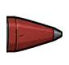
brimstone-rocket-warheadin use · 2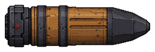
calamity-howitzer-battleship-shellin use · 2coyotes-grin-throwing-bladein use · 2ghostbolt-crossbow-arrowin use · 2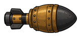
hand-mortar-shellin use · 2hexbore-voidmaw-runein use · 2leviathan-harpoon-gun-harpoonin use · 2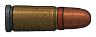
mesa-hand-cannon-50calin use · 2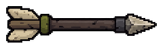
quill-storm-repeater-arrowin use · 2saintskull-monstrance-holy-skullin use · 2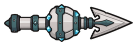
tidehook-bombarpoon-harpoonin use · 2twin-whisper-pagein use · 1verdigris-grand-pagein use · 1widowmaker-arbalest-arrowin use · 2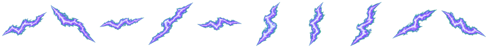
arcane-boltin use · 3arcane-motein use · 3arcane-orbin use · 2arcane-ringin use · 1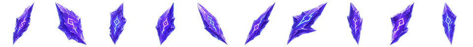
arcane-shardin use · 3arcane-sparkin use · 1arcane-splatin use · 1arcane-wispin use · 2blood-boltin use · 1blood-motein use · 1blood-orbin use · 1blood-ringin use · 1blood-shardin use · 1blood-sparkin use · 1blood-splatin use · 2blood-wispin use · 1fire-boltin use · 3fire-motein use · 1fire-orbin use · 2fire-ringin use · 1fire-shardin use · 1fire-sparkin use · 2fire-splatin use · 3fire-wispin use · 3frost-boltin use · 2frost-motein use · 1frost-orbin use · 1frost-ringin use · 1frost-shardin use · 1frost-sparkin use · 2frost-splatin use · 2frost-wispin use · 2holy-boltin use · 3holy-motein use · 1holy-orbin use · 1holy-ringin use · 1holy-shardin use · 1holy-sparkin use · 2holy-splatin use · 1holy-wispin use · 2katana-slash-drift-colossal-world-seamin use · 1katana-slash-drift-greatkatana-moonwakein use · 1katana-slash-drift-greatkatana-tempest-regentin use · 1katana-slash-drift-katana-riftstepin use · 1katana-slash-drift-katana-stillwater-edictin use · 1katana-slash-drift-katana-stormthreadin use · 1katana-slash-drift-nodachi-gatebreakerin use · 1katana-slash-drift-nodachi-pale-horizonin use · 1katana-slash-drift-wakizashi-hushglassunusedkatana-slash-drift-wakizashi-kagewakeunusedkatana-slash-x-sword-neon-katanain use · 1katana-slash-x2-cinderfang-wakizashi-pairin use · 1katana-slash-x2-gravechill-nodachiin use · 1katana-slash-x2-hailwidow-katanain use · 1katana-slash-x2-stormpetal-odachiin use · 1katana-slash-x2-voltfang-tachiin use · 1nature-boltin use · 1nature-motein use · 2nature-orbin use · 1nature-ringin use · 1nature-shardin use · 1nature-sparkin use · 1nature-splatin use · 1nature-wispin use · 1per-wisp-gravechillunusedper-wisp-hailwidowunusedper-wisp-stormpetalunusedper-wisp-voltfangunusedsand-boltin use · 1sand-motein use · 1sand-orbin use · 1sand-ringin use · 1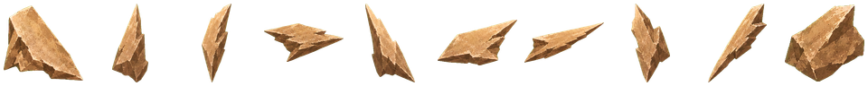
sand-shardin use · 1sand-sparkin use · 1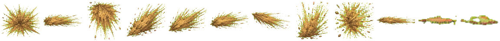
sand-splatin use · 1sand-wispin use · 2shock-boltin use · 4shock-motein use · 1shock-orbin use · 1shock-ringin use · 2shock-shardin use · 1shock-sparkin use · 3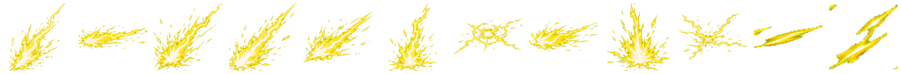
shock-splatin use · 3shock-wispin use · 3steel-boltin use · 3steel-motein use · 1steel-orbin use · 2steel-ringin use · 1steel-shardin use · 2steel-sparkin use · 2steel-splatin use · 2steel-wispin use · 3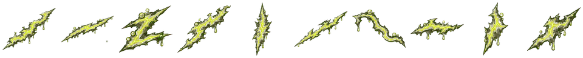
toxic-boltin use · 2toxic-motein use · 2toxic-orbin use · 1toxic-ringin use · 1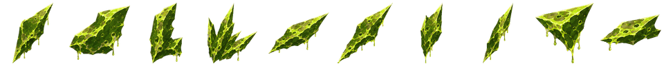
toxic-shardin use · 1toxic-sparkin use · 2toxic-splatin use · 4toxic-wispin use · 4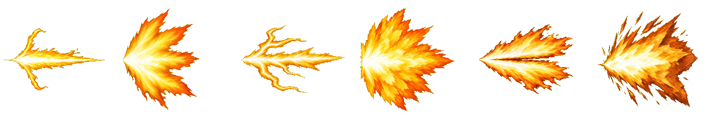
v6g-muzzle-flashesin use · 1void-boltin use · 3void-motein use · 1void-orbin use · 1void-ringin use · 2void-shardin use · 1void-sparkin use · 1void-splatin use · 3void-wispin use · 3water-boltin use · 1water-motein use · 1water-orbin use · 1water-ringin use · 1water-shardin use · 1water-sparkin use · 1water-splatin use · 2water-wispin use · 1arcanein use · 22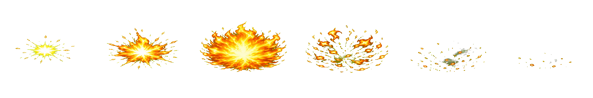
firein use · 38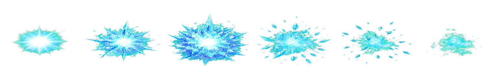
frostin use · 27holyin use · 17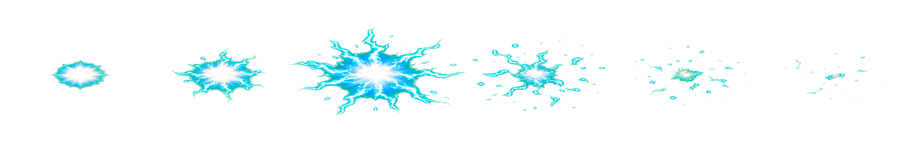
shockin use · 17steelin use · 11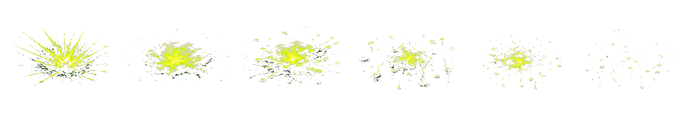
toxicin use · 15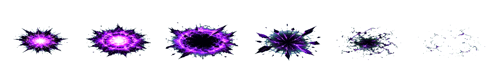
voidin use · 74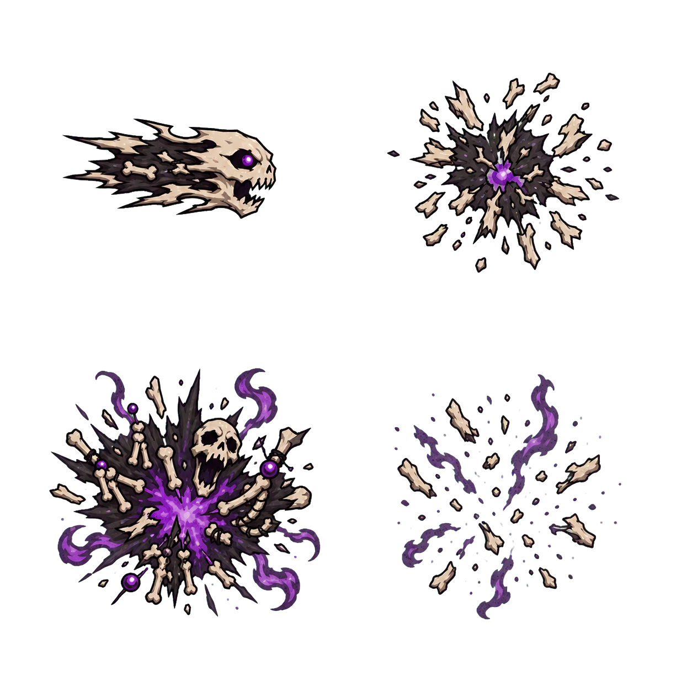
gravesinger-hex-sheetin use · 1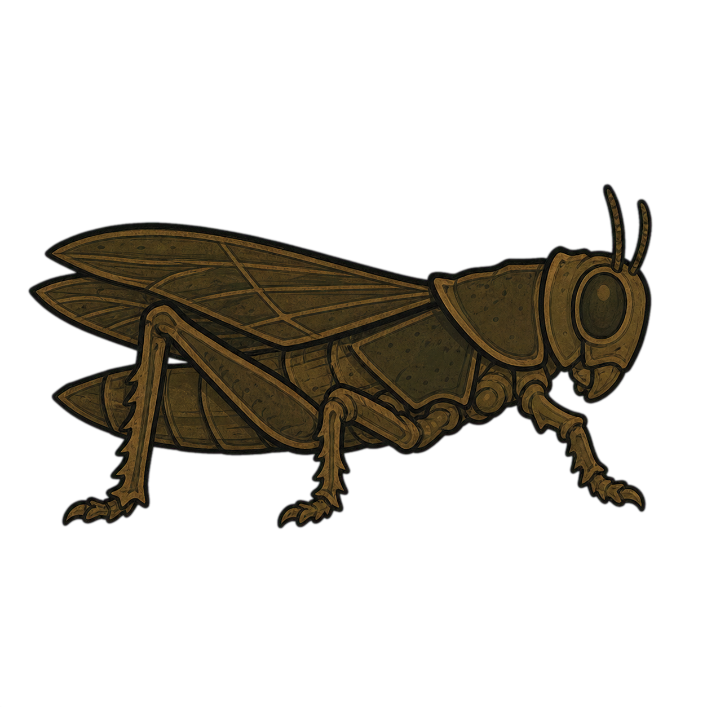
plague-locustin use · 1